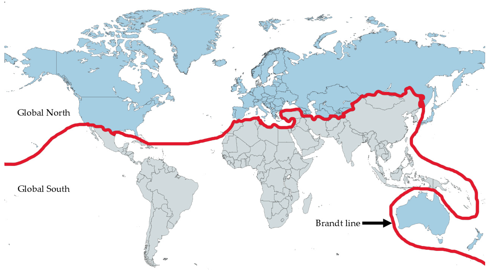

Economic Inequality
The Global North controls the majority of global wealth and resources. Economic structures and trade systems favor developed nations, leaving the Global South dependent on raw material exports and facing unfavorable trade terms.
Structural Inequalities
The Brandt Line, named after economist Willy Brandt, is an imaginary line on a world map that divides the planet into two economically and socially disparate groups. Drawn roughly along the 30th parallel north, the Brandt Line separates the industrialized, wealthy nations of the Global North from the developing, poorer nations of the Global South.
First introduced in the early 1980s, the Brandt Line concept represents a stark visual metaphor for global inequality. It is not a precise geographical boundary but rather a symbolic representation of the economic, technological, and infrastructural disparities that characterize North-South relations.
The Global North (above the line) includes developed nations like the United States, Canada, Western Europe, Japan, Australia, and New Zealand. These countries are characterized by:
The Global South (below the line) encompasses most of Africa, Latin America, Asia, and the Middle East. These regions face:

The Global North controls the majority of global wealth and resources. Economic structures and trade systems favor developed nations, leaving the Global South dependent on raw material exports and facing unfavorable trade terms.
The Global North maintains technological superiority in manufacturing, computing, biotechnology, and innovation. This gap perpetuates economic advantages and limits opportunities for the Global South to compete globally.
Access to quality education and higher learning institutions is concentrated in the Global North. This creates a brain drain as skilled professionals from the South migrate northward for better opportunities.
The Global North dominates international institutions and decision-making bodies like the UN, IMF, and World Bank. This power imbalance influences global policies and development priorities.
The Global South often lacks adequate healthcare systems, clean water access, and reliable infrastructure. These structural deficits limit human development and economic growth potential.
Many Global South nations were colonized, exploited for resources, and structured to serve colonial interests. These historical injustices continue to shape current inequalities and economic structures.
While the Brandt Line provides a useful conceptual framework for understanding global inequality, it is important to recognize that it is a simplification. Inequality exists within nations as well as between them. Some countries in the Global South have achieved significant development, while some regions in the Global North face economic challenges.
However, the Brandt Line remains relevant as a powerful reminder of the persistent structural inequalities that characterize our world. Addressing these inequalities requires not only economic policies but also political will, international cooperation, and a commitment to global justice and equitable development for all nations.